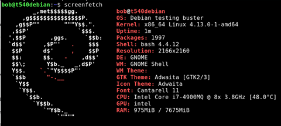
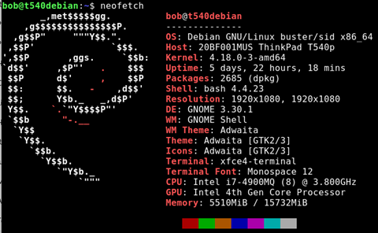

Screenfetch and Neofetch
February 22, 2018
What version of debian am I running? What is my system uptime? What is my current display resolution? what cpu do I have?
All of these questions and more may keep you up at night. This simple trick will help answer your questions so you can get back to sleep.
- Screenfetch
- Neofetch
| Sudo apt-get install screenfetch | |
| Screenfetch |

What is neofetch? Oh, it’s the same, just slightly better.
| Sudo apt-get install neofetch |

Oooo… Fancy.